<nav class="navbar navbar-expand-sm bg-dark navbar-dark">
  <div class="container-fluid">
    
    <!-- โลโก้ -->
    <a class="navbar-brand" href="https://www.spu.ac.th/fac/informatics/%e0%b8%ab%e0%b8%99%e0%b9%89%e0%b8%b2%e0%b8%ab%e0%b8%a5%e0%b8%b1%e0%b8%81/">
      
    </a>

    <!-- ปุ่ม Hamburger -->
    <button class="navbar-toggler" type="button" data-bs-toggle="collapse" data-bs-target="#mainNavbar">
      <span class="navbar-toggler-icon"></span>
    </button>

    <!-- เมนูที่จะยุบ/ขยาย -->
    <div class="collapse navbar-collapse" id="mainNavbar">
      <ul class="navbar-nav ms-auto">
        <li class="nav-item">
          <a class="nav-link active" href="index.html">Home</a>
        </li>
        <li class="nav-item">
          <a class="nav-link active" href="showcase.html">Showcase</a>
        </li>
        <li class="nav-item">
          <a class="nav-link active" href="activity.html">Activity</a>
        </li>
        <li class="nav-item">
          <a class="nav-link active" href="alumni.html">Alumni</a>
        </li>
      </ul>
    </div>

  </div>
</nav>
